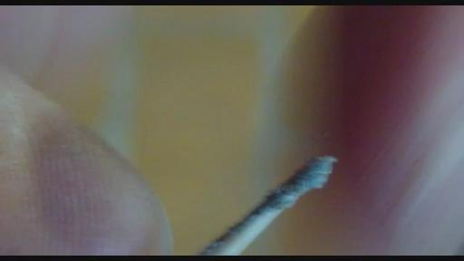
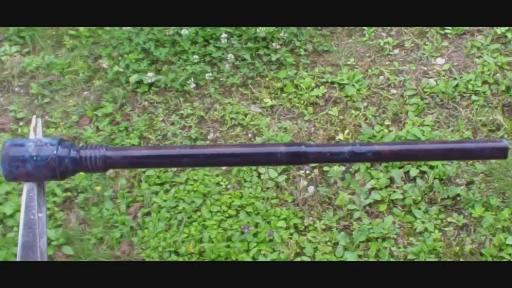
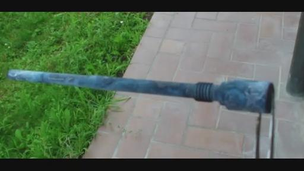

RICK:好的。那么在那种情况下，如果我们同时有中心鞘和内核的涂层的话，这样等离子体的维持现象就会像视频当中的磁铁显示的会实现超导的现象。会不会像是在一个超导的环境磁场当中，它们的相互排斥和吸引是相同的，然后把它们维持在相同的位置上。是不是这样相似的情况呢？
KESHE：是的。同时由于磁场的分离它也会维持住。平时的话，引力维持它，但是磁场是把它分离着的。现在让我给你们解释个事情吧，因为这是很重要的。因为这个问题提出来了，所以也是为了让知识寻求者们明白，这是一个你们会遇到的问题就是，当你在核心内发展等离子体的时候，因为这些层不是粘在反应器壁的，它们是分开的。但是同时你不可能往里面加入更多的能量，当它们之间也就是气体和涂层之间已经存在平衡的时候，或在纳米涂层和气体或者和等离子体之间。所以，你如果用进一步条件产生了等离子体，就比如用氢气的话是非常困难的，因为如果你说的那是很容易，那你就拿了2个纳米涂层的东西想把它们焊接一起，但是那是不可能的。因为磁引力场就在两个层之间就产生了分离。你不可能往里
面放入任何东西，否则你就可以焊接了，对于等离子体这是同样的情况。所以这种磁场的分离会给你一个相互之间的排斥力。是因为这两种物质之间的磁引力场引起的。你可以试一下，你们很多人都有纳米涂层的线，把它们放在一起，尝试把它们缝合在一起，看看你们能不能把它们缝在一起，这个是不可能的，这并不是两个尼龙绳或者泰富隆的。因为主要的原因是这两个层都产生一个磁引力场，就是一个磁引力场会决定其中的间隙。那个分离的隔层力是如此的强，甚至你们都没有看到它。没有任何东西可以穿过它。就是这部分的场体并不在物质的范围之内，而是在过渡层上。这个比物质的层面是更高的。所以这是你无法把它们焊接在一起的。你必须明白这个原理，还有在科学上的理解。但是同时你可以利用这个来制作很多新的材料和一些新的应用。目前我们在进行一些测试实验，要进行这些实验，如果那些结果出来后我们就会公布，这些检验是在外面完成的。现在我们用了一个新的系统给医院，这个新系统是我们为福岛做的另外一件事情，因为现在福岛的很多问题是我们不能够在那个区域去做，因为放射性太强我们会受到放射线的影响。我们现在在发展和下面一段时间我们就要提供一种新的服装。这个服装不会让任何的辐射穿透。这是我们和日本政府内部的一些机构所做的研究。然后还有2-3个政府和日本政府合作发展这种新的材料，然后会到一个新的理解上，这个材料我们是最初给NASA作为宇航员的头盔的。现在呢这就有了扩展，但是是完全不同的方向。我已经展示了这个层，如果你参加了我过去2-3年内其他的演讲的话，你可能会看到了这个东西。我们最早用的就是这种层的东西就是铜质的，然后一层铝，然后在中间我们夹的是纳米涂层的材料，解决了他们的问题。但是他们很久都没有明白，很长时间他们都不能够理解这一点。现在是另外进一步的扩展，这样就可以让人们以比较安全的条件在这种高辐射区域内去工作。这不光是为了福岛的发展，这是太空研究中发展中的一部分。因为在太空中并不是所有地方都是安全的。我们在地球的这个环境中安全是因为我们习惯了地球的放射性环境。但是只要你进入到太空当中的话，你就进入到一个不安全的区域，但是你如果要工作的话，你在太空的环境当中你必须要有这种服装，然后你就可以以一种自然的过程做一些自然的工作了。就需要这样做了。
但是就像我所说的这个过程带来的好处就是，
这种从未用过的装置就可以使得我们进入到太空之中辐射比较高的地方进行工作。现在我们就有了一个机会就可以在福岛进行实验来进行测试。这个材料最早会在医院进行测试，希望我们能够在下面几天或者几周得到检测结果。实际上这样你就创造一个你可以安全工作的环境，就不会有任何的辐射来穿透你，你就不需要穿那种防护服，宇航服，我们就可以创造一个安全的环境。这么做有一个优点，如果我们能够传达我们想到的这一点的话，这样我们就可以直接派人或者发送材料，我们就可以送机器人直接到福岛核电站的水罐的漏水孔的位置上。这样我们就可以把大水箱的洞给填补上。此刻的一个最大的问题就是福岛的问题就是辐射太强，我们不能允许任何人以任何方式接近内部把泄露源给堵上。所有的一切都是从外面来观察到的高放射性比系统本身所具有的还要高，所以这种关于材料的其中一个应用就像你们说的，这种磁引力场的隔层分离维持的现象其实还会有很多巨大的应用。如果你对缝隙进行进一步分析的话，你就可以利用这个隔层来，将混在一起的气体分离出来，就是你可以把两个层之间的区域分割开，你可以探测到它，这实际上就是我们在德黑兰所做的，你甚至能够生产出黄金，如果你明白这一点的话。什么东西可以通过这些缝隙，然后扩展出它的样子，你可以把两条线拧在一起，你拧的多紧可以使得缝隙变小，通过这个来决定什么东西能够穿越这个缝隙。还有在那个条件下有多少能够穿过。所以那个条件就决定了气体在两个层之间的流通和通过，然后你再决定从另外一侧出来的是什么材料，因为这决定了吸收什么和可以给出什么。我们会在下面几周我们会在反应器核心中展示这一点。这项科技的应用需要花我们很多时间来真正理解，人们会发现做事情的新方法。但是那些就说我们没有什么东西可以证明。但是现在国际上的政府们正在寻找这项科技的不同应用，就像我所说的那样，世界的领导人们和总统们不会很无聊的参与一个不着边际的科技。但是当他们看到了我们这个结果和数据，他们有这个数据。所以我们现在开始和他们进行合作。很奇怪的就是我们现在看到他们保持沉默，但是我们在一步步地进行合作，从不同的方面和政府的各种不同的机构，然后我们再看我们下一步怎么发展。现在有很多有趣的事情正在发生我最近看到的就是，美国政府在和伊朗签订了一份协议，这些条约对于他们是很重要的，一方面是关于伊朗的核材料方面的技术，很奇怪的就是还有伊朗的太空项目。他们把它叫做伊朗太空计划。美国现在在这两个方面在和伊朗进行了着一定的联系交往，我想知道为什么，所以这就显示出伊朗和他们的核技术他们所做的事情在太空方面和其他方面，现在是特别特别先进的。其他的人觉得比较感兴趣想成为其中的一部分。这个状况在最近发展的比较明显，如果你去深入发掘一下这些和谈会议的协议和讲话的话，他们公布的如果你能够发现的话，是美国特别关心的两个问题，美国政府现在很有兴趣和和伊朗进行了联系的就是核技术。
(第二次截止01:07:41)
因为我们这个中心在某些领域中比其他国家先进6-10倍。并且太空项目的合同现在变得更加简单了，并且更加先进了。现在你就看到了事情在高级别上是如何运作的了。这些活动就是在过去7天进行的，我在某些地方也发了连接这样你们可以去读这些信息。这个就是最近要发生的事情。
RICK：我最近在读发现有消息说伊朗是进步最快的，它不是最进步的，但是是进步最快的国家。而且在最近15年之内一直都是如此的。根据UN联合国的报道，在各个所有技术领域当中他们都是进步最快，在最近15年中改进最好的。之前从一个不太好的位置开始的，很明显的，现在他们的文章发布是几乎在世界上最多的了。
KESHE：很奇怪的是这从你的国家加拿大说出来的话。（笑）
RICK：他们是允许我们公布发表这个文章的，这是不是有点可悲呢？他们就发表了一些文章就没有效果，就是在纳米材料方面比较没有什么用处的，还有等离子体方面。基本上我们连看都看不到这些东西。因为我们的政府决定的是不让我们的老百姓看到这些。
KESHE：你要说感觉奇怪的话，我可以告诉你一些更奇怪的事情，加拿大政府是世界上一些给伊朗科学家发放签证最多的国家。还有针对向加拿大移民的。
RICK：是的。他们在这里说四种语言。
KESHE：你如果去看一看加拿大政府的官方报道细节，从伊朗移民到加拿大的这些科学家数量在发生革命之后，头几年后他们（加拿大）的情况就更加糟糕了。这可能会花费加拿大25年的时间去自己训练培养这么多的科学家。所以，伊朗的这些科学家是他们科技界结构当中去过20-30年中的重要组成部分。并且他们否认这一点，这种虚伪就像之前总统、首相在参与的事件中表现的一样。他们给了很多人很多压力限制人们，因为我要告诉你一些很多人都不知道的事情，但是我们可以更深入把这本打开透漏出一些：当我在加拿大的机场被拘禁起来的时候，在加拿大的一个特别有名的工业家他是我们家的朋友，我们任何地球上的朋友中只要你有一个手机的话，你就会知道他是谁。他们被告知了我们在机场的情况，然后他们把这个消息告诉了我们的家人，但是不幸的是他们所处的位置使得他们介入这个事情，否则他们在经济上领先地位就会失去了。他们对所有人都以这种方式施加压力，然后让他们保持沉默之后就可以为所欲为了。但是你们不要忘记的是，这些领导者他们是有任期的，一旦任期结束他们就会进到监狱里了。我们都看到他们了，这就要发生了。以前的时候我们看到过很多西方国家处理这些非洲国家是这样子的，而现在这要翻牌了，很多西方国家的领导人一样会进监狱如果他们在职的时候犯罪的话。就像在意大利的贝卢斯科尼先生一样，他现在就等于在劳教服务来作为对他的惩罚，因为他在任期内所做的错误事情，因为他年纪太大70多岁，所以不能去进监狱，所以要去做这种服务。现在就给很多的国家领导人都要去进监狱了，还有一些欧洲的领导人。这些人他们认为他们不会被撼动，所以他们要努力的保持维护住他们的地位。但是一旦当他们离开办公室的时候他们就会按照相同的方式受到法律的制裁。
所以他们可以做他们想做的，但是他们是有任期的。当他们任期之后就会变成平民，在任期之后他们就会被绳之以法。我们知道很之前的总统甚至在欧洲的国王他们都是正在排着队往那个方向走呢。你要意识到一件很简单的事情就是：你如果仔细看的话在过去20几个月当中，很多欧洲的国王和王后都已经辞职了。这些事情发生就是因为有些事情已经在背地里发生了。这主要是由于有新一代的出现，所以这些人现在在努力的维持他们的权力，因为害怕新一代的出现。尤其是他们所做的开始被逐渐公布到公众视野中。他们所做的那些破坏性的事情。
RICK：现在加拿大也有一些清理工作开始了，北美也是。这些市长还有银行家，他们在清理一些有问题的区域。普通人也被命令让大家把一些大量的土地清理掉。所以还有过去的一些滥用的情况，由于很多的变化，也有一些是从政府来的阻力。他们等于已经把脑袋插到沙子里了。而不是去关注一下先进的技术。
KESHE：是的。不是同一种的事情。现在噪音很大。
RICK：我刚刚掉线了。正好谈到我们在谈到我们可爱的精彩的政府的时候就断线了。
KESHE：是的，让我给你解释一些事情。这些人唯一幸运的是他们不在中国，因为根据中国的法律，中国的法律就会把他们判处死刑的。中国的省长这些官员们，他们离开这个位置后如果发现了之后就会他们就会到法庭上了。他们当中很多人不是没命就会在监狱里呆着享受监狱生活了，或者至少还能做些什么事儿。但是这个跟我们做的事情是没有关系的，但是换句话说，也要看一个人的（01:15:40it
touch ??？shape of form
）,需要解释的就是我收到了很多信件问我，能否把和凯史基金会的西班牙团队的情况做一下说明，我必须要说一下的就是：JORGE离开了基金会的原因是因为他不能够支付他的学费了。只要他能够支付他的学费他在这里是没有问题的。但是我们说过的我们需要这些学费来支付我们所购买的仪器和所有这些。然后关于基金会的一切信息就都是错误的了，如果你们这里面谁可以把这个翻译成西班牙语的话，就要把这个说的特别清楚了。这个事情完全没有任何问题，就对于我们所知道的而言。直到他离开的时候，
就是说他在这里面待了2个星期而其他人已经付了他们的学费。因为其他人就计划在学员待2年，所以我们的仪器都是购买好了，还有一些其他的东西。然后这就变成了我是不是还要付款，然后我们就发现了这封信在网络上面传播起来了。如果你来到这个基金会来为人类服务的话，你必须要遵照来这个基金会时我们的合同，就是我们所同意的合同，如果你作为一个志愿工作者，作为一个学生，之后就是我们的工作了使得一切能够顺利地进行。这也为什么我们要和大学一起工作的原因，如果你是一个讲西班牙语的听众，任何人在第一个阶段离开了基金会的原因，只是因为他来到这里一个学期但是他不能够支付第二个学期的费用。如果我们向任何人都去提供免费地方，或者免费的时间，或者免费教学的话。那就会使得基金会感觉到羞耻。但是JORGE在这里的时候，我们就没有发现在知识上对基金会而言有任何的增加。像我曾经说过的，现在我们尽最大的努力使得ELIYA作为医生加入我们的医学健康的部分。就是医疗健康的技术，但是如果你没有贡献的话，你就不要期望。这就是我们的基金会如何工作的，所以现在我的请求就希望通过那些在FACEBOOK还有很多频道上问向我问问题的西班牙的团队来跟那些一直紧跟基金会的人们反馈这样一点，还有ELIYA说请你解释一下这个事情，
这样的话大家就能够明白了。我们对很多优秀的支持者包括西班牙团队，尤其对巴西的基金会跟随者们都要表示感谢。我知道有一些信件说好像说我不太友好，我不像一个父亲。但是同时在一个家庭当中，当我们有一个约定的话我们要遵守这个约定。你不能吃饭完就离开桌子了，然后要求别人为你收拾。同样也适用于这些知识寻求者们。我们也是跟知识寻求者们解释了我们这里任何的材料需要的话，知识寻求者们已经在这里看到过的。无论需要什么，我们这里就会立刻弄来。那么就在你下一步要做工作的时候它就会就位了。所以当我们收到JORGE的请求，根据和基金会的协议,他无法支付他的学费了，他说他没有钱了。然后基金会就好像变成了父亲一样。这不是（01:19:07
this does not ?will see a lot of people
）很多人好像来了又离开了，但是当ELIYA上个星期在这里的时候。她就说拜托了。还是跟大家解释一下让大家明白吧。因为现在所发生的事情会给他们错误的印象。JORGE是受欢迎的如果你能够向我们的知识做出任何贡献的话，我们没有看到任何这方面的贡献。如果要考虑对错的话，那就要看人类期望要做什么了。那么来看看我们都已经习惯什么样的情形吧：当你签了协议，但是你并没有去遵守，这就变成了我们的问题了。就好像认为有一个问题的时候，当一方自称是受虐者，另外一方就自然的变成了施虐者一样。所以随着我们结束这个讨论，如果你能够把这个翻译一下，然后发到法语，西班牙语的链接里面，就是关于JORGE离开的理由。因为就像我跟所有的知识寻求者说的这个是学费，要支付。他不能够支付然后他希望我们做所有的事情。但是实际上我们没有看到任何的贡献，因为作为他来说，他从来连一个螺丝刀都没有碰到过。而且他做的就是一直在把纳米层粘到一个金属板上，现在它保持了太多的等离子体，那就像一种奴隶制度一样。所以他离开的理由是根据他自己的学期结束了。我们现在就想把这个事情整个结束，希望会西班牙语的朋友可以翻译过去，让西班牙语的朋友能够明白这个事件。现在考虑到对于学院的事情就是大学方面的事情，我们还在和政府的官员谈判进行讨论，关于执照方面的事情。当这些做好了之后我们就会公布具体什么时候开学了。现在所有的东西都在我们的基金会法律团队运作着。所以我特别衷心的感谢凯史凯史基金会的意大利团队，他们的工作是非常深入的并且在很高的级别上。如果没有他们支持的话我们是无法达到现在的状态的，他们为我们提供了各种的设施和便利。然后帮助我们达到我们想要达到的事情，对不起，我必须离开一会儿检查一些事情。我现在把麦交给MARKO。
RICK：谢谢凯史先生给了我们特别好的消息，感谢。
MARKO:大家好。
RICK：你好，MARKO。
MARKO:我想他可能会回来，但是在9点40他必须要走因为他有些事情，到时候你们还可以问他的。我们到时候再看情况吧。凯史先生解释了很多我们在上周所做的事情。有意思的是上周凯史先生向我们展示了不同的（01:22:27minus?）的配置，然后在桌子上面,他建立了一个模型，就像人体一样的。可能是从100到-100，其中有些地方的定位像表示人的大脑一样，就像带上了帽子一样。还有人的身体。然后他试图跟我们解释这些（01:23:02minus?），他们还有他们之间是如何相互作用的。它们在我们的身体内部建立起了相同的连接。这些连接是磁场还有磁引力场来连接，我们的身体也是这样的工作方式。他让我们站到桌子上面就是来看这些图片，不是从桌子这面看而是从上往下的去看，但是我们要看从三位立体的角度去看这些。
而不只用二维的角度去看等离子它的磁场，我们应该通过一个三位的角度来看。所以所有这些场体都像3D螺旋状态的网一样在向外放射。这就是我们应该怎么来看等离子体和整个设置。我们现在在实验室中有8个反应器，在4个一组的星形组合中，所以我们看他们应该是要三维的去看他们。而不是说以物理的方面来看这些反应器的反应腔，但是要看到在反应器内部的等离子体还有它们之间的相互作用。就是想在这次教学中的前面所提到的那样。有趣的讨论还有关于各种气体，这些气体的温度和压力。就像凯史先生之前讲过的，所以我们必须从不同的方面考虑这些气体之间的关系，比如通过等离子体，而不是通过物质的角度来看。每一个等离子体都有自己的磁引力场，会产生它自己的环境。这些环境不允许被挤压。这些等离子体必须有自己的空间。这就是为什么当你有更多高原子量的气体的时候，他们其中的一种气体的体积是会大一些的。我们现在在物理上所使用计算方程式就根本不成立了。我们已经发现了什么是压力和温度，我们必须要用磁场的角度去看待压力和温度。我们能够说温度是磁场的发射，那么压力怎么说呢，就是在环境当中的一定数量的磁场。就是我们应该通过磁引力场的角度去看一切东西。所以我觉得科学界必须重新定义这些物理学中方程式，不管何时我们看到一个环境（大气层），我们必须就必须要有的一个想法就是：在这个环境的背景里有等离子体创建出了其中的环境。等离子体就有能力创造出磁引力场，我们将会尝试对这个现象录像，只有这样才能够更好的理解。如果我们在桌子上进行一些实验的话，你不能够把一定量的它们挤放在某个地方，当我们推挤它们的时候，或许你（觉得）能够挤压它们，但是当你挤压它们的时候它们会重新对自己进行定位找到位置。它们两个不会走的更加的接近，只能说它们的场体不允许它们这么做，所以是它们对自己进行定位的。我们都知道磁铁有它们的场体，我们应该利用这些环形的磁铁做一些实验，换句话是用这些等离子体模样的磁铁把等离子体保持在了磁场链的中间位置了，所以它们根据彼此的场体和放射性来彼此定位。还有一件比较有趣的事情就是不锈钢的反应器有一个问题，在我们星期一来的时候。我们来的时候发现电机不转了，连接反应器的阀门气管坏了。我们就更换了一下电机。先让反应器慢慢的停止旋转了，我们发现转动的阀门是被卡住了。我们试图在把这个阀门修补一下。我们放了一些真空纸在密封圈的位置上。然后阀门就开始旋转了。还有一些裂纹使得真空有些丢失。所以我们决定把它完全关闭换一个新的阀门。就是当我们把旧的阀门拿出来的时候，我们发现一些白色的粉末在阀门里面出现了。同时，在连接阀门的气管中也发现了一些白色的粉末。非常像雪一样。这些东西没有理由会在这里在反应器里。因为我们的反应器曾经已经经过很多次的抽真空处理了，但是它还是在这里了，唯一合理的解释就是里面的磁力和磁引力场在一定的情况级别下被转换成了物质。所以这是我们的第二次观察到这个现象，我们之前在伊朗的反应器的视窗位置看到的，在上个星期。我们曾经往网络上放置了关于这个事情的一些照片。我们有另外一个这个现象的例子。就关于我们现在发现白色的材料。这就是我们一直做的。我们同时也是在试图用各种不同的气体注入我们的反应器中。我想进行这些反应器的实验工作是非常重要的。我们现在有这些反应器的经历之后我们就变得比较自信了。当我们一开始就在制作反应器的时候看到了9到10个阀门在你的前面，然后用这些阀门控制所有的气体和真空度。还有一些反应器的连接事情。这些是很难控制的。但是1个月后当我们做这些事情的时候就比较适应了。我们现在做这个事情已经基本不怎么需要特别的去想，我们闭眼睛都可以完成它了。（笑）
我们正在做什么。所以不管怎么样，你必须在这里想着它。如果你犯了错误把错误的气体放进反应腔的话，或者你打开了一个阀门，或者真空阀门打错的话。但是现在的话就很容易了。在2-3个月之前，就跟你开车一样，你根本还不知道该怎么样，结果在开了几千公里，两万公里之后你就会觉得特别的自在了，这就是学习的过程，每个人都要经历的。换句话，对于反应器学习的过程，不管什么时候你给反应器充气还是其他事情的时候，当你重复这个操作过程的时候，你每一次都要对反应器的时候。在操作几次之后，比如几百几千次以后，反应器就会变成了你的一部分了。从这一点上来看，也就好像变成了你行为的一部分了。同样也发生在其他情况下，从这点来说，我也认为这个部分就像是反应器的大脑是非常重要的。这个学习过程就是如何来引导3个反应器的行为等等这些事情。所以些就是我的观点，现在我把麦克风交给JOHN，让他谈谈他的感想。
JOHN：大家好。就像你们大家听到的那样，我们新的反应器很快就要加入到其中了。这些反应器实际上它们的球体尺寸会更加小，然后要用甘斯材料来填充。可能会有不同的甘斯会注入到反应器当中。RICK，我早上给你的链接希望你现在能够看到。
RICK：我现在一直想打开链接，但是现在有些麻烦，或者你可以分享给我。JOHN，你要哪张照片？我有2个反应器的，你想先谈哪个照片呢？
JOHN：所有这些的照片都跟我们现在要做的有关。我们在装配新的反应器。我们已经把它们装配到一起了。我们放置的上一个链接的视频显示了我们目前整个的设置。这个视频显示了所有的电机都被关闭了，今天实验室里面非常的安静。你要看的时候就能发现这2个新的反应器已经在实验室当中，虽然还没有链接起来，它们马上就会装载被链接起来。所以这是其中的一个方面，在图片里面有特别小的牙签，事实上，MARKO说在他的反应器被拆开的时候看到一些白色东西在罐子里面出现了。ARMEN就说在旁边戴着那种光的灰尘。在这个系统里面一般是不应该出现那些白色粉末的。除非是等离子体的磁场产生出来的。
RICK：我们这里有一个关于这个想象的问题，我们那应该是MAREK提出来的，有没有可能这个是烧碱的残留物呢？有这个可能吗？
JOHN：它是在塑料管上的。（和ARMEN背景嘀咕）
RICK：会不会是你们白色的硅胶密封的东西出来的呢？所以它们可能释放出到真空系统的后它们就结晶了？这个有可能吗？
JOHN：实际上我们有过部分硅胶进入到旋转的阀门里。如果我们用硅胶就是因为它们是极少挥发的，基本上不会在挥发后影响真空度，如果那样的话我们就肯定会遇到问题了。我们把这个东西收集起来之后是有一点灰颜色，你可以看照片上。

在这个牙签上面，这个部分实际上所在的区域是根本不接触到硅胶的。
所以不管怎么说，不锈钢反应器只有1个鞘从下面到里面的位置放置的，这个鞘是经过纳米涂层的。所以很可能不会有烧碱在上面，因为它已经洗过了。这个鞘是在2个月之前装上去的，

（放入反应器之前的状态）也抽过几次真空。所以不管怎么说我们能够看到这个东西是不正常的。就是不应该看到类似这种粉尘灰尘的东西在里面。

（放入反应器运行后状态）这只是我们现在这么理解的，现在具体这些是什么材料我不好说。
RICK：这个情况是挺有意思的。就像1年前的时候凯史跟我们讲过的，有些材料会在在真空管里面或者反应器里面形成，这取决于等离子体发生的条件，所以也不是今天完全没有想到的。
JOHN：是的。无论怎么样，我们都有对不同事情的不同看法。关于鞘的各个角度我都拍了照片。我将鞘放到了新的反应器里面。因为鞘是黄铜的，然后ARNMEN进行了纳米涂层处理，他很高兴。
RICK：我现在就在这里放了个照片就是纳米涂层的，它看上去不像黄铜，有一点发蓝色的涂层在上面。至少要有几层涂层才能够看上去是这个样子，我说的对吗？你能够看到在LIVESTREAM上的照片吗？
JOHN：照片的号码是多少呢？
RICK：是0045。这个是另外的一张。应该是0035。这个显示蓝色，有点蓝的纳米涂层。就是一根棍状物。这个是黄铜的吗?HELLO?我们和太空学院失去联系了。在一头看看我们是不是能够再把他们邀请回来。现在我们这里有一点技术上的问题。必须等等看能不能够重新建立一下连接。
VINCE：好的，我们正在等待太空学园的连接恢复，你们能够听到吗？
JAMES:是的，能听到。
VINCE：我们现在在等学院那一边连接起来，有谁想谈一点什么吗？
JAMES：你们有一些照片能够放到GOTOMEETING上面吗？
VINCE：不行，现在不行。
JAMES:好的。
某人：我听到上次的讨论关于在做杯子的，你们有任何人能做这种符合材料的饮水杯子来治疗。有人知道怎么把里面的碱从纳米材料中除掉吗？
VICNE：我认为你只要清洗它们就可以了。哦，谁在那呢？
JOHN：我们现在回来了。 （KESHE插了句话）
RICK：我们现在要连接ARMEN吗？现在他要来了吗、
JOHN：好的。
RICK：你最好先把这个麦克风打开。
ARMEN：是的。听到了吗？
RICK：我们检查一下声音怎么样了。
KESHE：是的，你能够听到我们吗？
RICK：是的。我能。好的。（KESHE在背景中对别人：我们要连接起来。你没把那个结对。没人能听到打电话）
KESHE：你现在能够听到我们说话吗？
VINCE：凯史先生在麦克上面吗？
KESHE：我现在是戴着耳机的。你能够听见我们吗？
VINCE：听起来还是像没带耳机的状态。
RICK：现在可以了。声音好多了。
KESHE：原来我们在实验室，现在我们在教室里了，你可以听到背景的噪音是一样的，因为也是没有电机的。（笑）
RICK：听到了什么声音好像从桌子上移动过去的感觉。好像还是有一点问题，是不是要重新来呢？
KESHE：没有。我不在的时候刚才是谁在讲呢？好吧，我把麦克交给JOHN。
JOHN：我刚才在说放在新反应器中的中心鞘放。它被涂层了好几次，涂层是蓝色的。放到了烧碱当中，用黄铜制作的。那个鞘是从底部的位置放进去的，在电机链接的位置附近。可能过几天我们就可以完成了，因为我们还有一点东西需要弄，就是把甘斯等材料装入反应器中。我们把反应器放到地面上那样可以像正常那样在地面上运行了，我们必须检查一下地面。因为地面不是完全平滑的。这个就是我要说的关于新系统的事情。其他的反应器现在还在正常运行当中。我们一直可以观察它们的场体，在中间的探测器我们看到了很多的场体变化。我们检查了场体探测器，但是现在电机都在停止的状态，现在场体降低了很多。就是在平均值上，场都在平均值上。这里比较有意思的地方就是。在测量场体的时候，但是现在电机就停下了。场体的变化就降低了很多。所以这是有很有价值的信息。有趣的就是我们现在仍然可以看到还是有等离子体。因为我们有普通正常的环境，因为等离子体都在所有的反应器里面。场体自从昨天开始已经上升了。自从将电机去掉之后，场体的数据仍然还在上升。我们正在进行网络教学的时候这个数值还是在上升着的。你们有什么问题吗？
某人：是的。我有个问题，你怎么把甘斯放入到反应器中呢？你们是用了什么样的阀门呢？你知道你不需要再保持真空度了。我在想你们都在用什么样的阀门。
JOHN：在液体的情况下，把甘斯放进去有一种比较简单的方法，用针头把它注射进行，在最上面有一个冒口可以拧上。所以在反应器里面就会有水和甘斯，这些甘斯是在水中扩展着。这是很简单的就可以跟大家介绍的。（第三次翻译截止01:59:31）
某人：好的。
JOHN：我们不会去对系统抽真空，而是会让甘斯物质在水里面扩展开悬浮着。我们还是会旋转它，我们就会利用中间离心力的压力，那么重的元素会走到反应器内的一边的位置。我们已经看到了就是在ARMEN做的塑料反应器旋转甘斯材料的一些情况。甘斯基本上就粘在了反应器壁上。然后在球体的中间，因为这个材料是混在水里的，所以旋转的话必须要高速旋转，应该要达到5千转每分钟。这个是个非常高的速度，因此，我们就把这个系统装到一起的时候需要在中心的位置。所以我想这些设置还需要一些小的调整需要进行，因为这些反应器都要在很高的速度下运行。
某人：你会往反应器当中放什么样的甘斯材料呢？
KESHE：我们还没有做最终的决定。但是我们现在有各种甘斯，这样我们就可以产生不同的磁引力场。就可以用不同的甘斯在反应器核心中产生不同的磁引力场。
某人：那你们将来可能会用干燥的甘斯吗？
JOHN：不会的。我们会把材料放在淡水里。
某人：谢谢。
BRAT：那如果我们制作的话有什么地方是需要小心注意的呢？
JOHN：最主要的就是我们不要去用手碰触甘斯材料。还有同时，不要去吃甘斯。因为ARMEN已经展示了不要吃它。（笑）但是主要是我们操作这个材料的时候必须要小心。如果你有一个反应器的话，你最好不要漏搞了弄的到处都是，重要的就是你们需要向我们学习的那样来进行，我们下一步当旋转反应器的时候就会说的更多。
某人：我还有个问题，是不是我可以使用电台的无线电波，电磁波来处理甘斯而不需要旋转就可以呢？
JOHN：我没有明白你的问题。你是说电磁波吗？
某人：是的。就比如说RNF装置，就是类似频率范围内的无线电波。比如你有一个仪器可以产生无线电波频率，然后你有经过纳米涂层处理的线，然后把它们之间连接起来。把线放到外部和常规频率的装置连接起来。那个装置也和内部连接子一起，就可以当成反应器。可以用这种频率吗？
JOHN：我没有这样的经验，我不知道是否有用。也许可以实验一下看看。你还有更多问题吗？
某人：谢谢JOHN。
KESHE：是我，我又回来了。你有什么问题要问吗？现在我想要澄清几个问题。JOHN谈了关于转换电机的事情，我们之前测试过这一点。电机对探测器的读数是没有影响的。我们知道这一点已经很久了，因为这是在物质层面。另外一件事情就是，我们甚至在反应器的核心之间来回走动来看探测器是否有什么样的变化，人体移动也不会影响探测器的读数。我们看不到下降或者任何情况。另外你刚才提出的一点，就是把甘斯干燥的问题，这个是不能够试的，因为有一种可能就是当我们把甘斯干燥之后，那么再甘斯状态的可能会一样，但是看起来显得更加像物质一些。因为这是很有意义的，因为我们现在有一种方法测试它。
我们在做的2个新反应器都有一个中心鞘，有2个反应器是在外边有涂层的。我们会看到在ARMEN制作的透明的反应器核心。这就是我们的测试，还有一个是我们要去打碎的反应器。打碎的那个具有纳米涂层的，现在我们要看它们之间如何相互作用。如果我们星期一打开反应器的话，我们应该看不到任何的纳米材料。它没有的话我们再去看看该做什么。这个就是一个纳米涂层的部分结构以及它如何工作的。稍等一下（KS起身离开）
ARMEN：好的。我可以继续接着说。
KESHE：对不起，因为我们的基金会在背景当中有很多事情正在进行。这2个反应器到时候就会告诉我们纳米材料和甘斯是否由于相同的材料和结构组成的。然后再看看是不是我们接下来还要这么做。在我们打碎的一个反应器核心当中，我们看到了是这个情况是相同的。但是哪里实际上是应该没有材料的，但是那里却有材料。我很确定那里那里没有材料，但是那里却有材料。所以我们必须要理解在那里出现的甘斯的行为表现。我们需要弄清楚这一点。有一个问题就是，现在从核子研究中心得到的拉曼光谱中，即使我们看到了氧化铜，或者我们看到了CO2，但是由于水的作用，因为一开始我们最初使用的是盐水，因为这些盐水是产生了甘斯材料的。我们用的水是自然水，不是用公共自来水。因为我们这里有自然资源，所以我们是不用城里的自来水的。我们使用这个盐的时候是带有一些钙的，进入到了我们的这个过程中。所以在那些氧化铜里面有一些钙的残留物，作为钙的甘斯。所以当这种钙的甘斯和各种我们生产的甘斯材料混合在一起的时候，因为我们在水里面和环境里面造成的。这样就使得和CO2或者氧化铜的连接进入到了物理的反应器核心内部了。
RICK：凯史先生，
既然钙和反应器有关，那么考虑到钙在我们人身体当中的作用，钙元素是主要的元素，是不是可能激活我们身体中的神经系统和其他系统？
KESHE：是的，但这是很医学的角度了。
RICK：是不是在生产生命的形式上会起作用呢？比如大脑可能会用钙的甘斯，不是吗？
KESHE：你如果要回到相同的结构上，就是你现在谈的东西上，就是纯粹在复制我们这个系统，就是你的大脑和脑壳。液体就是在你的脑壳和大脑之间的就是脑脊液。部分的脑脊液就是用来传输钙的。这部分就变成了你的大脑和脑壳之间的隔层。你的身体就是9岁的老化程度，虽然你觉得你比很老了，但是它一直在更新。就像你每次给墙壁刷油漆。脑脊液就一直在输送钙，怎么才能够适应这个条件才能被你的大脑吸收，就是大脑中的条件和磁场的光谱来吸收这个钙。并不是刻意而是一个自然过程的一部分，所以我们也在这里有这同样的过程，但是就像我给你解释的就是教大家在医疗方面教学中说的，你的甲状旁腺决定你的身体中哪些材料变成了甘斯，达到哪里。所以我们在我们的淋巴当中现在有钙和其他各种物质材料，当我们哪里有需要它就会去到哪里然后变成物质。你如果打开淋巴的话，你不会看到钙和其他是分开的。它有一个范围的光谱。它是等离子体的，就像你看到鸡蛋的例子，当蛋黄需要钙的时候，就会通过指令，通过胸腺，当它的引力场环境达到的条件时，它就会变成了这种物质实体了。但是它有一个储备来看看能转化多少。这是为什么你会看到在你的血中缺少钙或者其他材料的情况出现。
因为这是根据你需要多少以及通过甲状旁腺来决定进行转化的工作时间次数，所现在的情况对我们的这些新反应器也是同样的。我们有CO，然后还有CO2，还有CUO,CUO2，我们还有钙。很有可能，在这个结构里面我们还有其他的矿物质的残余物，但是拉曼光谱仪显示出的CO2还显示出比如有CO3CA的痕迹，所以我们知道了钙是O2和CO2的磁场之间的连接（共价键）。这就是隔层和物质之间接触链接，如果你想为未来的反应器制造甘斯的话，像用甘斯开始的话，所以你必须不能够排除矿物质。但是你可以降低钙含量，因为钙是产生连接作用的，就在地球的磁引力场环境中。所以你最好想办法在一开始的时候就减少钙，这需要用蒸馏水而不是自来水。即使你买的瓶装饮用水里面还是有一些钙的。我们现在已经走到了很远了，但是现在还需要回过头进行纠正的情况，所以你会看到为什么你的甘斯会粘到了反应器的内壁上，就跟你的皮肤一样。你制造了内层和中间层。外层就是反应器的外壳，中间层就是钙或者CO2什么的，还有氧化铜。内层就是我们的甘斯材料。这些甘斯是在运行的状态不会粘物质上，但是我们还是要看下一步会发生什么。未来我们能够用气体来取代水的使用，或者用等离子体取代。如果你能够引进去等离子体的话，在这些层或者甘斯材料当中。由于等离子体的存在你就不需要水，然后你就可以完全离开物质环境了。就完全处于等离子体的环境中了。所以这些是要发生的事情。还有其他的问题吗？
某人：凯史先生，我现在有一个问题。在你之前的教学中你提到在一封你给UN的信件中，你提到人和人类会接受你的科技。不是为了科技的美好，简单而言而是他们想要维持并且挽救他们的生命。现在我有2个问题。第一个就是未来你会向公众公布你给联合国的信件吗？第二个就是，你上周向知识寻求者所解释的有什么关系吗？就是关于太阳系它还有一个姊妹星。你能够跟我们解释一下吗？我们就可以明白现在到底是怎么一回事。
KESHE：我给UN联合国的信件是这荷兰凯史基金会行动的一部分。我们会把事情告知UN联合国，至于保持沉默还是发布出来是他们的问题。但是我想现在它们是保留了我的信件，我们现在看到了一些周围的行动表表明他们保留着我们的信件。
在未来，他们凯史基金会的管理者，而不是拥有者。我们基金会以后会有一个管理层的席位由他们出任。所以他们必须要被告知，并不是要影响他们,只是要通知他们。我们和UN，还有宗教领导人之间的相互关系更倾向于告知而不是合作，如果他们想合作的话那么就7月14号来吧，那是另外一回事儿了。所以整体而言我们只是进行告知。在我们凯史基金会的结构当中我们有一些在国际上很有影响力的人。这些人对这些知识比较重视，还有一些比如说建议，实际这些行动的部分会影响联合国。有一些国家接受了我们的科技的原因是由于他们打算要做什么，就像我最近跟我们的一个志愿者所说的。没有任何科学家会以这样迅速开放的方式广泛的将这项技术传播到普通人群中。我在过去的几周听到说，我们发现有一个人开始了他的工作，我们很欢迎他的工作。很明显，他就是他就是特斯拉汽车的拥有者，他们是以同样的方式开放了专利。所以在这个层次上工作的人知道这个事情的意义，他们知道要发生什么。我们当中很多人而且很多人，你们会发现很多科学家都会有这个过程，公布这些专利。高科技专利会被公开出来。如果他们可以的话那么很多科技的专利会公布出来。如果大众能够做的话他们就可以这样做。并不是说因为你有专利才可以做，而是让你们都明白怎么能做，我们会使得你明白怎么样能够做到。我们可以完全把这个专利公布了之后我们可以本来就什么都不去做了。但是现在我们尽量深入细致的向大家传授和解释这些都是什么含义。
ARMEN就说我们就把所有的事情给解释一下就像它原本看来应该是的那样。而不是被人为制造出的那样。今天，我们已经说了将近2个小时。
但是只要你去看一下关于甘斯的方面说了哪些。很多科学家会明白我们今天教学中说的这些甘斯的应用的话，可能要100年才可以。这个是第一次我们制造了等离子体，它可以实现自维持，不需要花300亿美元。我们控制着它的转数，不需要用很多的托克马克（Tokamak:可控的核聚变装置
http://baike.baidu.com/view/25094.htm?fr=aladdin）还有很多磁场。我们现在有了8个等离子体，而不是一个偶然，我们已经赢得了一个阶段，对一点进行了确认就是向世界科学界科学的公开了，我们改变了一个目前物理学领域中一个公认的关于温度和压力的方程式，我们发现了这个错误所在。这些都是巨大的进步。目前的一个最大问题就是我们现在释放了如此多的信息，99%的这些信息根本都不为人所知。这些人只是在听着。当未来重新看讲课的记录时，你会把这些写出来。就好像我们把这个写在了100年前，我们从来就没明白。你们必须要意识到的一点，昨天我和ARMEN在实验室里笑了，你知道螨虫就在你的头发里。我们有一个特殊的词汇更深入的词汇来解释它。因为我的背景我就知道它是什么意思。你们不会理解这是什么意思。这个螨虫就像地球在宇宙的整个结构中是一样的。这个宇宙就是你头的尺寸,甚至要更小。所以在将来的时候人类会如何发展下去实际上并不是那么重要，这只是一个自然的过程。实际情况就是在地球上形成了整个灵魂。结构具有我们的特点，所以应该加入到整个宇宙的灵魂中。灵魂完整了就会离开了而不管这之后发生什么。所以就像你的大脑中有一个点，它的功能就是信息传递，然后作为你的大脑的一部分，传递给你的原子，太阳系的创造也是一样的过程。你的物理身体是无关的，但是灵魂必须要成为宇宙通用的灵魂。这个就是主要的因素。实际上，像地球这样的星体就是作为培养箱来生产灵魂的，就在当你施加力量，当你把第4-6-8个阶段部分连接在一起的时候，你就会明白得更大的结构。人类的身体只是培养箱，和母亲是一样的，母亲就是培养箱，母亲是为了有更好的孩子，人类的身体就是？为了在他们的生命周期中创造出灵魂。然后这些灵魂会加入到一个更大的结构当中，会成为更大结构中的一部分，就变成了这种在灵魂和身体之间的灵性的连接。就会到达另外一个层面。所以根本不需要害怕会发生什么，所有的造物都不会丢失掉。这个实质就是，植物被水灌溉，这些水水会保留在地里，这些水就会给到花朵，然后蜜蜂就会来采蜜，然后蜜蜂会把这带到其他的地方，这就是为什么制造这个星球和灵魂的目的。所以那些总在担心接下来发生什么的人你们知道，自从我们这次开始谈话到现在已经有几十万的星体已经经历了这个过程。其他的也会发生。这个是无关的，当你在出车祸死的时候你的灵魂并不会消失，这是是同样的过程。但是是在一个更大的层面上。所有的这些灵魂会在一起构成了太阳系的灵魂，然后就会变成宇宙灵魂其中一部分，宇宙的灵魂就会有所增加。过去的这些传导者在不同层面教导我们，但是今天我们把整个情况告诉大家，当我们全部人类准备好的时候，就像当一个孩子出生之后妈妈去世了，不等于这个小孩子就没有一个太阳了。太阳就再也不存在了。这个就是实像。
RICK：凯史先生，现在有一个从LIVESTREAM来的问题。凯史先生知道我们的太阳系的姊妹星系中心星体的名字吗？
KESHE：对不起，我们不给这个星体加个出生证的名字。
RICK：好吧。（笑）
KESHE：我没有看到那个星星旋转的时候举着个数字标签。如果我发现了我会给你一个的。
RICK：可能在尺寸上会比较惊奇。（笑）可能就是说撞一下就会跑掉把。是不是就像逃逸那样？你也不知道是谁？
KESHE：不是，是我们会撞上之后就会合为一体了。
RICK：好吧。（大笑）
KESHE：这是一个自然的过程，没有区别的。我本周读过一个东西但我不确定回忆的是否对就是，教皇在星期天做弥撒的时候说，你跟基督走太近的话是危险的，但是他没有去具体说什么。请稍等一下。
MARKO：我来解释一下我是如何明白这个事情的吧。我看到这个帖子在网络上，就是教皇说关于你和基督的关系，你跟它的连接只能够通过这些神职人员，你直接跟基督连接是不可能的。这会是一种罪（危险的）。好的。
KESHE：所以我们现在看到了这种限制，就是说谁能够和上帝走近，现在你们明白了吧。我们把这些留给控制交通信号的人。这些控制交通信号的人来决定谁可以走谁不可以走。这个事情就说明人太过物质了，他们选择用他们自己的方式来进行这种物理上的控制。当你以某种方式思维的时候，这就很难使得人们改变他们的想法。他们接受的这种方式，现在必须改变然后再接受新的方式。这个就是我们平时如何滥用的情况或者我们尝试证明我们是正确的。我们现在正在寻找从心理上人类接受来接受改变。让人们从这种恐惧罪恶的想法中解脱出来。以及会发生什么。我们看到这些人用一些毒品吸毒。他们利用像海洛因产生这种妄想症，把这联系成了物理的现象，他们就把幻想当成了现实，这就是这个药品、身体药物的最大问题。所以当你用毒品所发生的就是使得你产生了内部的想象，他们把就情感和物理身体连接在一起。这是原因你的大脑有两部分（一部分是情感，另外一部分是物理的），其他药物是不会有这个问题的。这是我们具有的一个相同的问题，我们有多少是幻想的。有多少是想象它是正确的。多少是给我们想象力带给我们的意味着我们必须去接受它，这和我们的信仰所产的一部分问题是一样的。当人们开始接近理解的时候。他们就给你引入到了另外一条分离的道路上，给他们设置了恐惧。就像我在其他的讲座中给你说的，我们不是声称我们是基督再来或者默罕默德或者谁。宇宙的使者都有不同特殊的目的和使命。这些是你们人类认为下一个来指导你们的人，我们的问题是我们并不是来指导，我们的问题是如何来生存。如何来吸收我们能够提取的。这个和人类做的事情是一样的。像我们人类一样，你把一些种子放在北极然后以防意外发生的话，我们可以再次去得到种子是一样的。在宇宙中的每一个部分的每一个实体，都是一个大的美丽图画上的一片叶子。所以我们保持所有的东西。
（第四次翻译截止02:31:00）
KESHE：我们都是一个最美丽画面上的叶子，所以我们争取保留住所有的东西。我们都要保证让这些东西保留它应有的样子。所以对于这些人，听到我说过会有什么事情会发生。对于那些相信有基督再来的人们，它会以这种我们看到的方式再来。我们的工作不是那样的，你希望什么样子就是什么样子的，这个是他们的问题，你如果从整个上方看的话，你就会在以后的路程上明白更多的。如果我们不拯救这个星球上的人们，如果不付出的话就不会有基督了，也不会有任何像穆斯林还有基督徒像他们那种方式去对待上帝。所以如果有在阻止和拦截整个事情的进展的话，那么人们就会被误导到其他的地方。如果我是教皇或者任何其他宗教领导人的话，作为任何一种有追随者的领导人物，我就会去支持凯史基金会。任何阻止我们的人，实际上是把他们自己的命运葬送掉了。如果这个地球上的人类不被拯救的话，那么在宇宙中就会没有基督，也不会再有穆斯林。也就不会有基督，也不会有默罕默德。这个星球会成为过去了。这就是他们信仰中的短视。所以我们明白发现这些说法随着我们基金会的工作逐步打开后开始在逐步的增多，这并不是少数人。那封以我之名的信件被很多世界上的最高宗教的领袖和高层领导人，还有他们在世界上的这些跟随者读过了。所以你们阻止我们就等于结束了你们的基督之名，因为如果这个地球毁灭的话就不会再有基督存在了。所以跟实际上跟梵蒂冈和其他宗教领袖的合作是拯救你们自己的信仰，而这不是来接受一个新的信仰。这就是要发生的变化。那些说法就比如你是弥赛亚的话。为什么你不跟全世界都表露出来呢?因为这个并不是我们的工作。我们的工作就是要以正确的方式保存下基督的名字。当一切都结束的时候，将不会有任何人所谓的任何命运了。所以我对那些坐在这里观看这一切进程的人的建议是非常简单的：如果你是一个具有开放心智的人，你是非常正确的，并且你是来这里为了拯救基督的名誉，那么当这个星球消失在宇宙中的时候，宇宙中就没有教堂，没有基督。只有你在支持这个名义，所以在很多方面上，如果这些宗教领袖支持凯史基金会的话，同时在更深的层面中，通过他们自己的工作。很多人需要彻底的明白的就是这两者的区别，一个是基督的再来。还有一个就是弥赛亚。或者你可以再叫其他的名字，那是人类的进程，那些信使是人类，他们和我们是没有什么关系的，我们知道他们。作为人类的工作还有指导人类的部分工作要通过他们来完成，但是那是要随着我们更深入的进行下去。如果我们被不明白的人控告或者告知的话，对这个情况非常简单能理解的就是。如果你们人类不作为一个种族一个政府合作的话，那么你就会没有政府没有宗教，除非你想保持现在这样。就像一个人有什么样的秘密放在盒子中，没有人知道秘密是什么，但是所有人都知道他又秘密在盒子里，但是还是会支持他。所以我对于梵蒂冈的信息，还有那些对人们进行恐吓使得人们恐惧的人：你们要做相反的事情了，你们可以参加进来把基督带入宇宙当中，而不是在这里就这里灭亡掉。在未来你可能会在宇宙碰到这些同样的信仰，就是以不同宗教的名义，比如基督，默罕默德，都是不同的名字而已。这个是非常非常基本的。我对那些人们的召集就是，你们阻止基金会你就会在宇宙中结束基督之名。你支持我们，我们就会带上你们。否则如果这一天来到的话就不会有基督了因为不会有地球了。这就是我们在意大利的理由。这些是准备好的，并不是偶然的。有什么问题要问吗？
某人：是的。凯史先生。我想问一个问题，在《以我之名》这封信当中，在第19段里写着，你们作为亚当的后代，已近在你们自己及他人过错的掌控中承受了足够多的苦难，而现在接收你们的造物主的爱，他将指引并保护你，当你在调整并与造物世界的其它造物重聚的不远的路程中时。那些拒绝我的意愿的人，他们因为拒绝而终将看到他们自己的消亡，而且是由那些理解了造物的真相以及这个意愿的他们自己的同胞来令其消亡。我的问题就是谁是其他的造物呢？
KESHE：就是你本人自己。不端行为就是包括你的还有就是其他你周围人的还有其他政府的。
某人：谢谢。
KESHE：下一个问题。
BRAT：凯史先生我有个问题。我上个星期离开了我一个朋友的家，那里有一些UFO在我们的上空飞过。我现在想处理一下这个事情，我现在意识到了那些问题。有两个人后来跟我联系，其中一个就跟我就说感觉能量正在他们的头顶上方。另外一个来的人就说感觉能量降到了脖子上面。那么就是说为什么这些人会有不同的地能接受到呢？
KESHE：你知道的。我从来不对这些事情发表看法。这是我们的政策，如果是科学方面的事情或者科学方面的数据和图像我们是可以讨论给你解释的。这里有一个原因就是，如果我们这样做的我们就会变成一个UFO小组。还有那些讨论外星人之类的小组了。
某人：我把视频，照片发送过去了。
KESHE：我看到那些照片了。
某人：我还有一些照片但是还没发给任何人呢，我已经发给了ARMEN，让他发送给你。
KESHE：没有问题。如果有一些东西在上面，如果我们可以用科学的方式解释的话我们可以给你解释。
某人：你可以实实在在的在物理上看到的。
KESHE：没有问题，但是有些东西并不好解释是什么意义。就像我之前在这些讲座当中跟你们说的，当人类很快从宇宙中的一个部分去到另外一个地方的时候你就会没有家园了。有一些人经历过同样的事情，如果你认为一个星球具有一个固体的表面，就可以在这种一个大气压下的状态能够支撑我们的生活。而我们就是在这里唯一的人的话，我们本来就在这里的。那么把其他人都看成是外人的话，那么你就会有很多很多的麻烦了。在宇宙的层面上，你的家从来就不是你的家。这个是经常让我觉得好笑的，对我就像一个谜一样。就像你是说你是英国人，你是比利时人。我在比利时曾经体验经历过大家对于外国人的那种恨和种族歧视。在我居住的那个村子里面，没有人给我们提供服务。因为我是唯一的外国人。但是我是在那个村子里受到最高等的教育的。很奇怪的是这些人买每张票去西班牙，然后他们变成了外国人，他们希望别人对他们能够善待，只是因为他们是人类。这就是人的虚伪性。所以说你看不到人类和所谓的外星人接触，因为他们知道人类的本质是非常错误的。相同的一个人在比利时他把我叫做创建人，这个人买了张机票然后到那西班牙那边去生活，但是他没有看到那块大地有一个所谓的创建者在。这个就是问题所在。一些人以自我为中心，这一切都应该结束了。你如果在太空当中也要玩儿这个游戏的话，你就完蛋要消失了。
我前几天跟知识寻求者们解释，就问关于为什么你们把他们叫做（02:40:40 call them ?the
bottle）为什么我们带上这么多的人，因为很多人会在这个过程中迷失在很多的进程中。前天ARMEN就因为他是ARMEN，所以他在给反应器充气的时候就用这种方式，实际上他的那种方式就像在往火上浇水一样，整个反应器就变热了。这样我们就哪也去不了了。我告诉他你如果在太空中前进的话的话，你就不知道会跑到哪去了。让我们说一下现在的情况来让人们理解吧。有多少人会在其中的时候被甩开把。当你做出一个错误决定的时候，当你作为一个飞行器的驾驶员，把它放下去的时候你就知道这些乘客会遇到什么情况了。只有那些系上安全带的人才能够活下去。其他人就没办法存活了。因为这种潜在的可能性，我们现在在考虑很多人，NASA曾经做过一次这样的实验，就让你考虑能携带的最大人数是多少。在一个长期的讨论当中。这样我们就会有一个比较好的基因库。所以这样就不会变成同一个形状或者颜色了。我大概记得这个数字是在200或者244。250大概这个样子。所以对于人类这个基因库你需要一个大量的数字。所以这是一个非常奇怪的状态。他们到时候都会在一个飞船上，如果他们不接受这种形式的话。你能够想象在一个飞船中基督徒试图把穆斯林教徒转化的情景，你会想穆斯林他们会做什么，他们难道会坐着去看吗？
RICK：现在关于宗教方面，好像有很多的笑话。就是在飞机上。（笑）
KESHE：不不。这并不是笑话，而这是现实的情况。但是同时要发生的就是，我们现在邀请这些世界宗教领导人我们必须要看看我们要教导他们我们作为一个整体需要来平衡。你们需要一个人以正确的方式来教导并且你们就知道你们都是平等的了。这就是我们目前面对的同样的问题。我们现在在这里看到了一个新的开始过程。现在让我给你们解释一下吧，就是这些知识寻求者已经深入到达了什么程度。我不知道他们有没有给你们解释过，他们在这里看到了转换，关系，还有交互作用的真理的本质了。当大概2天前，一个金属的核心发生故障坏了。MARKO更换了这个反应器的气管，然后密封阀门，当开始的时候它的扭住了所以必须要进行更换气管，我们有一个红色和蓝色的管子。但是过了一会，那个问题还没有得到解决。因为就有了一次泄露，上面旋转的阀门也就停止了。这就是为什么我们有了一个扭曲的现象，我们需要更换一下。最后我们总结的结论就是需要把整个阀门更换掉。更换气管的时候什么都没有，只有需要往核心输入气体。这些气管已经更换过很多次，因为故障更换了不同的部分。所以MARKO注意到了有一种白色的粉末在那个管子里。所以10分钟或者多少时间，没有超过半小时，因为它们对反应器进行了抽真空处理。所以相当于部分的等离子体就被抽到了管子里。因为这个过程就被转换成了物质，所以我们能够看到这些灰尘物质，所以我现在们在这里面看到了等离子体转化为物质的过程。这个物质会是什么呢？会是金吗？如果在那个管子内部形成了纳米涂层的话，会是钚吗？会是氢气？或者这个等离子体会导致生命产生呢？如果这个条件在等离子当中，那么它就会发生了。然后MARKO就决定更换了阀门。将更换下的阀门就放到桌子上，然后订购一个现在的一样的新的。MARKO昨天把这个拿了起来，我们就看到了大量的物质在阀门里面，还有在连接阀门的气管里。所以在我们的系统当中出现了等离子体向物质的转变，我们把这个东西刮了下来，JOHN拍了一些照片。我们将来要看我们这个过程都产生了什么物质，现在你创造了条件，你创造了生命，然后当你在太空当中，你希望这个生命有什么样的宗教信仰呢？穆斯林?基督?还是什么，这就会是最大的问题。
所以我们来要求这些宗教，这就是我们为什么要求宗教人士之间进行谈话。所以在很多的方式上，我们在等待着来教大家什么是实像或者它是什么。在很多方式上，我们在向下一步前进之前我们试图将所有的宗教联合起来。就像我们统一科技界那样。这将关乎在未来，会在飞船上发生的问题。当你在飞船在太空当中的时候，我在想你怎么样才能够让船上的这些人变成基督徒或者穆斯林，当你们在太空当中看到他们的时候。除非我们要教他们你们都是一部分，都是平等的。只有在那个时候你才会生存的空间。要不然就会成为笑柄了，我们所讲的这些只有一个目的那就是把大家以正确正常的行为联合在一起。我们知道这些比利时的警察和政府要对我做什么。因为我们曾经被安全人员告知过。我们知道他们正在做什么，这些没有任何一切东西可以伤害我们，不要忘记的是我们知道这是什么。那么我们可以进行的这种惩罚远远能够超过人类可以想象的，如果我们必须要惩罚的话我们能够达到这一点。但是惩罚的时代已经过去了，现在是解释的时代了。今天我们把两个反应器放在了轮子上面，这样就可以自由的转动了。在未来当我解释的时候，他们可以在三维空间上旋转，它们每个球体都成为了自己的实体。神是为了勤劳的人，如果我把一个人放在这个球体里的话，那么他就会没有保留的透明了，他还是活着的，他就没有必要必须去那种固态可见的监狱里了。这不是在释放恐惧，只是在向你解释这个知识的力量。有一件非常简单的事情，相对于地球人类只是一粒灰尘。尘土终究会归于尘土，而且地球也是个非常小的星球。人类比它还要渺小。如果必须要做的话，我们就会显示我们的力量，我不会犹豫的。不要忘记有一些很简单的事情，上帝的使者确实会去做的。不管你是梵蒂冈，还是默罕默德。因为犹太人对基督所做的，他们经历了很多神的试炼，想想摩西，那么你们就可以想象用我们的力量我们可以做什么，然后已经发生了什么。那里甚至都不存在这样一个他们所称的属于他们自己的国家了，他们必须要等待一千年才能把这个国家带回到以色列。一个人，一个国王无论谁你们如果试图阻止这个过程，对于我们而言我们没有任何问题。准确的说会终结这个国家的名字的就是国王本人，而这不是通过恐吓，是通过那些会为被其他人所称的他们所拥有的国籍而感到羞耻的人来完成的。如果他们知道了他们的国家领导的头脑在想什么都在做什么的话。如果这个对你来说很难理解的话。我以更简单的方式来跟你们说吧。因为整体情况已经清楚了。就是当伊朗人的革命发生的时候，当他们知道他们在德黑兰做错了事情的时候，那些人不是伊朗人，但是他们把自己叫做伊朗人。然后很多在农田里的伊朗人，他们改变了就说我们不是伊朗人，我们是波斯人。因为对于古老的名字我们会保持尊重。我们不想像其他宗教。他们不想碰触其他人做的那些错误的事情。所以现在同样的事情发生在那个国家，人们不喜欢被称作为那个国家的公民，因为那个国家做的一些错误的事情。我们不需要去挑明它。当人们看到这些事实和真相的时候他们也会去那么做的。宗教也是一样的。那些牧师和教皇应该建议所有的人都要以正确的方法接近基督去寻找在他们生命中这正确的教义。而不是说接近基督是会危险的，或者对他做出一些错误的事情，除非那些领导是想要进行控制。上帝的使者你们要教导人们跟上帝去接近去寻找给人类的教义。然后就要人们通过自己的理解来评判而不是通过别人来向他们解释，这些事情可以停止了。或许在1500年前，那个时候还没有那么多的文盲，而现在很多人都是文盲和计算机盲，这就是过去最后一个国王的尸体仍紧抓着不放的事情。我的建议是，不论你是什么宗教。你们都要去和宗教人员去接近了解这些事情。通过和别人的谈论来理解，而不是按照那种通过任何人的那种解释的方式来理解如何如何，之后你就会发现真正的途径和路径。之后大家就会逐渐的融为一体。因为当你知道了真相，你在这里并不是为了制造阶级，你是在这里要创造一种平衡的环境。因为你要在你的灵魂在你的心里来支持你的信仰。之后你就会知道你并不需要寺庙，你就可以直接来向基督或者默罕默德祈祷，这就要看你所选择的道路了。我们不会有新的宗教，我们只是把各种宗教结合在一起。我再次解释的就是，这些人如果你想在你的生命中继续你的信仰的话，你就支持这个基金会，至少我们可以把你带出这个星球。不然的话你们都会不复存在了，这是惟一的方法。你们不会看到的基督的飞行器或者穆斯林名义的飞行器。只有一个（名义的）飞行器。当灾难来临时，这几千人不会问彼此是哪个教派的，不管什么宗教的人们之间都会相互帮助。那是友谊之手。这是一样的状态，你不会看到飞船下沉。在韩国，船只下沉了之后我们失去了200多个学生，全是由于船长一个人的自私和贪婪。现在对于太阳系的飞船是同样的情形，因为太阳系（变化）的进程是一个自然的进程。所以你不能够只看这个人是白人、黑人、黄种人，是穆斯林还是基督教徒，还是犹太人。宗教并不会起作用。需要联合起来拯救更多的人的生命，这就是我们的目的。还有任何别的问题吗？
某人:凯史先生，你原先在教学中提到有些人或者其他生命到地球后把地球当成了家，他们会和我们一起住相当长的一段时间，我就在想你是否可以和我们分享一些事情，这个事情大家都比较清楚了。他们来自于不同的生命。由于他们跟我们是一样的人，但是他们没有腿住在水里就像美人鱼一样的。这个是科技上我们证明了他们的存在。你能够告诉我们一些这方面的事情，或者告诉我们一些类似的情况。跟我们比较相似但是住在海里。你有什么东西可以分享给我们或者教给我们吗？
KESHE：我想描述这个事情最好的方式，就是你可以望天空上看。就是NASA拍摄的大气层情况的视频，我在论坛上也谈到过也在几年前解释过。就是关于这些照片。我在2年前在论坛中谈到过这个事情，就像你注意到的我一般不参加论坛当中的讨论。因为这些政府骇客在每次我进入到论坛的时候。他们就会进到论坛。论坛就不会工作了。他们通过我的计算机。你看我并不是经常上论坛是因为我想保护这个系统。这个是由比利时和IMEC所做的。他们还和一些其他在意大利的组织做的。还有一些人他们自己做的。如果你现在回头看一下NASA在太空中拍摄的视频的话，你能够看到其他的生命的部分结构，但是如果你不明白的话，你就会看不出容易忽略掉它们了。这些在天空里，水里，还有在星球宇宙中存在的生命现象是非常正常的事情。你有或者没有尾巴只是为了能够保证你的DNA的存活。所以如果你明白这些的话，你会就明白生命并不是唯一的。人们说在火星，月球上有生命，是的，那里确实是有生命的。因为在那个环境下会允许特殊结构的生命形式存在。这根据适应能力，我们会在地球上适应这个环境。因为环境，所处的位置，因为冷暖等等我们已经适应了，所以在宇宙中也是相同的情况。现在我们和别人在一起，那么别人也会和我们在一起，如果你看一下的话就知道，我们从非洲来。我们的眼睛为什么会改变成了蓝色，有的变黑色，还有一些高还有一些更矮，还有一些人为什么是黄头发，只是这些环境，像欧洲南部的环境使得我们皮肤变得更加白，使得我们在这个环境下活着。对于食物的消化系统也是一样的。没有区别，我们的身体和其他的没有区别。他们在我们的星球上，我们可能都不会注意到他们就坐在我们附近在一张桌子上。因为我们看不到他们，因为我们没有工具去探测，就是我们身体所携带的程序。虽然我们的大脑具有这个程序，因为我们的大脑是一个特别复杂的系统，是跟周围的环境完全没有关系的。好多人就说所有人只使用了5%不到10%的大脑，爱因斯坦只是使用了更多的一点点。你大脑中的每一部分的每一细胞都会在你想要的目的下持续的运行。和需要探测的东西进行交互作用，来了解什么是需要的，在哪里能探测到来保证你能够存活。你意识到了什么是物理实体，你可以看到，能够闻，但是你的大脑做了更多你并不知道的事情。这个和上次的某个人说的差不多，就像我们上次谈到的垃圾DNA。说到垃圾DNA的就是垃圾科学家，因为他们不了解它。如果这个东西没有用的话，就不会在大脑细胞当中了。为什么大脑会制造相同细胞一遍遍的在相同的位置上。这就是由于人类生命周期的短暂，因为我们不能够明白造物的地方，实际上有一些其他的实体。这些做决定的实体，并不需要腿和脚。这就是我今天早上和ARMEN说的，ARMEN并不是在反应器的前面来碰触反应器，他只是坐在那里控制这个反应器。去试图去明白它的目的，通过反应器来理解目的和方向，它要进行的。人类拥有这种物理物质性地方，正是人类可怜的一面。下一个问题。
BRAT：凯史先生，你是不是还有一些那个级别的论文能够发表让我们看呢？
KESHE：实际上是有很多事情都发生了，所以我们必须要理清头绪进行处理。现在我们的网站基本上停止了，因为在过去几个星期有太多严重的攻击。很可能我们就会把这些服务器弄到一起。因为这些严重的攻击。有些人就问你为什么不去把这些激进的事情都结束呢？因为这些人会利用各种途径去做各种的事情。但这不是我们的工作，但是我们尽量把一些东西拿出来放到主服务器当中，然后再把这个程序启动起来。我们的网络管理员告诉我在服务器上管理有三万多页的信息，你们只是看到了极少的一部分。所有的论文都会释放出来，有一个可能，就是马上我们基金会就会宣布有很多重大的变化。如果你看到我们所计划的，我们想要达到的。现在还有我们期望能够有一天把所有的书籍免费的公布出来。到全世界。就像我们制作的U盘那样，如果他们喜欢的话他们可以对我们进行捐助。所有论文也一样。在下面的几周中，如果我们达到了我们正在谈判的事情。我们就会释放所有的这些医学文件，使得全世界全部的医生都可以得到。去帮助所有的患者和病人。这些都是我们同时接着要做的计划，这并不是什么奇怪的事情。医学的专利是在U盘当中你们已经拥有了，只是人们不明白如何使用它。这个事情同样发生和在能量生产专利上，和在飞升效果上面，是在主要专利当中，我们要传授他们这些。现在我们到了一个点上，就是我和和很多医生在交流，还有一些健康方面的人士。他们就说你为什么不教这些呢，我们要等到一个点上后我们会释放所有有关医疗的数据，很快就会完全的公布出来到全世界。就像我们已经装好了U盘要去释放是一样的。我们会告诉你如何来解读理解在专利当中的数字。就像你们每个在做反应器的人，你们都可以制作一个属于自己的系统，虽然你现在又了专利但是你不明白去怎么样做，我们会向你们解释所有的过程。有很多事情都需要去做。但是有一件事情你们必须要想一想，有些人他们自称他们是什么，他们试图使得基金会特别忙乱，就像那些不同的犯罪活动，在警察队伍当中还有其他的，使得我们不能够花时间来进行教学和完成我们的工作。现在我们已经回到了正路上，我们不会理睬发生了什么。不会去理睬那些发生的事情。虽然我们没有足够多的时间把所有事情都完全教导出来，但是对于医学方面的教学，我们会集中精力很快的传授出去。这都是下面我们要继续的工作。我现在很高兴因为和ELIYA谈到了这些部分，因为我可能能帮助1-2个人，但是我不可能去面对上千人，还有几百万个有各种病和问题的人。有一些事情是确定的，FMS，ALS，所有这些癌症疾病，还有所谓的精神分裂症，所有这些在人类血液系统中的这种堵塞，中风不通的疾病我们都进行了实验，系统的作用结论是100%正确的。所以当在一个国家中有4700万人口的时候，有一些人住的只隔着几英里，我只能看到他们当中的1.2.10个，
当我们就可以在下一阶段去释放这些信息，这样他们就可以自己制作这些系统，而不是等着我们已经有4700万病患之后再做。我们就不会看到这些疾病了，同样对于癌症也一样。全世界有多少人会死于癌症，当我们教导了你在太空的时候，你就可以自己帮助你自己。当你在太空的时候你去想方法再去明白专利是怎么回事儿是没有用的。我们已经开始了这个进程了。我们完全可以进行到下一步。但是如果你想要我的专长，想让我来帮助或者让你的医生兄弟来帮助你，这是由你来决定的。实际上你可以去修车店，能够做这个系统。但是你需要去医院，因为医生具有知识懂这个系统，因为他知道如何去成做。收获已经结束了，专利游戏已经结束了。所以你现在不需要担心这些论文，因为你马上就会得到整个了，会学习到更多了。如果你认为只是得到了U盘，那么现在你马上就会得到这些U盘里的所含有的知识。如果你想要纸质的书，你就可以去基金会去购买，但是同样的你可以在网站上捐钱然后下载书籍。
RICK：我想我们现在好像快到结尾了。我想你是不是还有其他的东西要宣布呢？就是凯史先生关于在14号的早上的会议。
KESHE：一件事情就是，我们会去举行这个会议。我们之前进行过，我们不会公开它，这是我们的宗旨，就像之前是一样的。我们就会进行下一次8月29日的会议。你必须要认识到的就是如果第一次会议没有任何进展的话，我们是不会安排第二次会议的，所以一定是有一个过程，有一个工作的节奏，我们就以这样的方式进行，宗教领袖的工作就是去回复这是他们的工作，我们不会说有什么东西从梵蒂冈，或者是从德黑兰传出来的。我们会把电子邮件的名单列表放到网络，你们可以以你们的方式和他们去联络。和这些世界领导人，还有和比利时的警察。你们可以鼓励他们去工作。而且是否他们告诉你们他们会参加，那就他们的工作了。所以会议已经准备好了。
RICK：那就是说我们这些人就是说可以发邮件给他们，联络他们，让世界领导们知道事情在进行。
KESHE：他们应该参加。你可以告诉他们是谁在发送这个信件，因为这个信件比较重要。这是个在技术上比较关键的。我们知道当我们打算开始这个进程的时候我们知道，但是这是我们必须要做的。让这些宗教领袖来到我的桌子上是非常困难的。就像我说过的我有技术可以强制实现，即使我们对所做的事情对一般人来看就是一种魔法，但是我们不做这种魔法。我们是通过科学的方式，然后他们才能够明白。就是这个是怎么样才能实现的。这件事情的美妙之处就在于，我们有知识寻求者们可以向你们展示，而不是只是我在说。如果让我要向很多人去解释让他们明白的话，如果我们可以让ARMER坐在一个反应器的前面，就像之前那样做，就可以通过改变他们的意图来操作反应器。就是我具有的知识的力量。我可以让这些世界的任何宗教领导人他们爬着进来。但这不是我们的目的，他们必须自己走着进来。让他们的追随者们按照相同的方法，这是非常非常简单的。我们这一次会录像，当这些知识寻求者坐在反应器的前面。然后我们会去看和这个人相互作用的力量。就是通过这些反应器。那么现在在等离子体的这个情况下，然后你们想象一下我具有的这些知识和足够力量使得70亿人都变得服从，但这不是我要做的工作和目的。这样做对于实现目标是没有意义的。我们可以立刻就实现，而不是通过带着面具的方式在教堂里去带着希望的去通过教义来实现。
然后再过100年再等他们转化过来，就像我说的我的愿望就是我的命令，如果我有这样的愿望的话那么70亿人立刻实现，如果太难以接受觉得这太愚蠢的话，那么我处于的这个身体里面的DNA可以追溯到第一个母亲。你们都身在其中，所以这就是为什么我们进入到被造物的身体当中来创造事物。这是最简单的回答，对于那个问题就是你和什么接近是危险的。在这个当中我们比较接近，我们就在这个结构当中，每一个在这个星球上的人在变成宗教领导人之前都是一个人类。我们每一个人类根据联合国的研究我们每个人都是来自于同一个母亲一个部落中来的。即使我们和马，猪还有其他的东西分享相同的DNA。所以如何我希望这样的话这会是瞬间实现的，你到底是多么希望手脚跪地的来成全自己呢？但是这对于我们的目的是没有用的。没有人会达成这样一点，没有人会学习到。所以今天要感谢大家，这个是由你来决定的。谢谢，大家再见。
某人：谢谢凯史先生。
RICK：非常感谢大家，感谢太空学院。这是非常棒的信息。
（第18次教学全文结束）